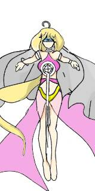

女祭司 The High Priestess
元素水
對應牌18月亮
對應星座月亮
牌義女祭師是擁有真正內在智慧的象徵，她身後的兩根柱子，代表邏輯和直覺、左腦和右腦二元性的連結，所以她明晰的智慧如同水晶一般剔透，她腳下的月亮代表想像力，而她的身後的布幔遮住了一池水，她可以感覺到水的存在，但並不十分理解，此潛意識之池到星星才會明顯的表現出來。女祭師象徵的是：人還未和自然完全分開時的那份感知力，“接受性”是她的特質。
關鍵語接納、想像、直覺、洞察力、無私的愛★暗示像內探索、沉思、或按兵不動的時刻
牌正面用直覺和潛意識的智慧來尋求靈感。
牌反面忽略直覺用腦袋判斷，缺乏前瞻性。
代表女祭司的原型人物很多，如：天主教中的聖母瑪麗雅、埃及神話的伊希絲、希臘神話的阿特蜜絲、羅馬神話的戴安娜，但最為貼切的角色莫過神雕俠侶的『小龍女』，久居古墓的小龍女，專心潛修武功，不被七情六慾牽動，不受世俗的打擾，
但千萬別以為她是沒有感情的，如同女祭司，他們只是將感情跟感受力隱藏在冷酷的外表下，所以如果用『不食人間煙火』來形容，倒不是這麼貼切了，內心的波瀾只有他們自己知道，畢竟是『月亮』＋『水元素』，月亮跟安全感、情感起伏有關，水元素跟感情與直覺有關。
祭司畢竟是古代的行業，以現今社會來討論的話，有可能是：『專業』度高的醫生、律師、或是『獨立作業』的研究員與『專注研究』的歷史學家等職業。
以單張牌來解釋，在工作方面：工作狀況穩定，建議按部就班的完成任務就可以。
與同事的互動不會太多，也有可能是從事，獨立性較強的工作。在感情方面：單身者有可能現階段對於愛情不感興趣，或是正在單戀自己喜歡的對象。
已有對象者，感情穩定，有基礎的情感連結。在生活方面：喜歡觀察或學習，適合研究自己喜歡的科目，交友空間較窄，喜歡與自己獨處。
離開卡牌